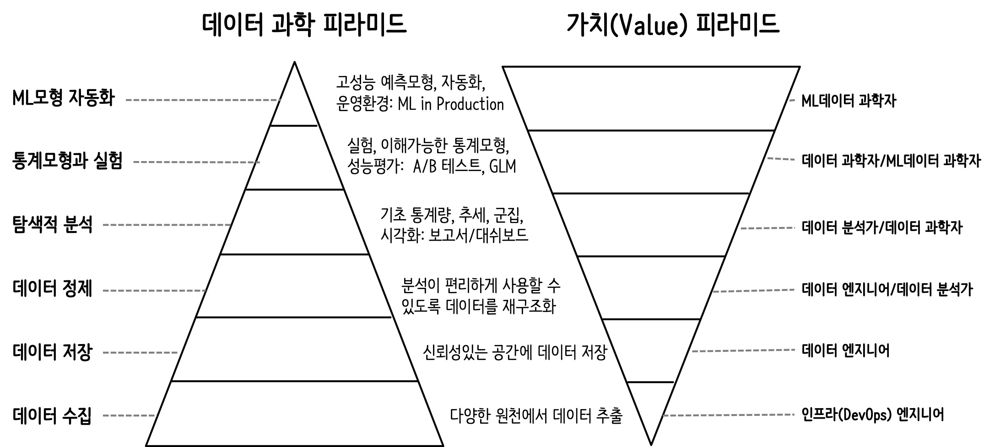

library(tidyverse)
bill_df <- data.frame(
sex = factor(c("여성","여성","남성","남성")),
time = factor(c("점심","저녁","점심","저녁"), levels=c("점심","저녁")),
total_bill = c(13.53, 16.81, 16.24, 17.42)
)데이터 사이언스와 디자인
디자인과 아키텍쳐의 중요성
이광춘, 한국 R 사용자회
2022-10-11


데이터 사이언스
데이터 사이언스
데이터 사이언스


데이터 과학 욕구단계설


데이터 과학 문제
데이터 과학 문제
데이터 사이언스 - 출판


복잡성


시각화 - 그래프 문법 3
R 코드
실행결과
bill_df sex time total_bill
1 여성 점심 13.53
2 여성 저녁 16.81
3 남성 점심 16.24
4 남성 저녁 17.42R 코드
bill_df %>%
ggplot(aes(x=time, y=total_bill, group=sex, shape=sex, colour=sex)) +
geom_line(aes(linetype=sex), size=1) +
geom_point(size=3, fill="white") +
expand_limits(y=0) +
scale_colour_hue(name="결재자 성별", l=30) +
scale_shape_manual(name="결재자 성별", values=c(22,21)) +
scale_linetype_discrete(name="결재자 성별") +
xlab("점심, 석식") + ylab("팁(Tip)") +
ggtitle("식사 결재 평균 팁") +
theme_bw() +
theme(legend.position=c(.7, .4))실행결과
R 코드
bill_mat <- matrix( bill_df$total_bill,
nrow = 2,
byrow=TRUE,
dimnames = list(c("여성", "남성"), c("점심", "저녁"))
)
mf_col <- c("#3CC3BD", "#FD8210")
barplot(bill_mat, beside = TRUE, border=NA, col=mf_col)
legend("topleft", row.names(bill_mat), pch=15, col=mf_col)
par(cex=1.2, cex.axis=1.1)
matplot(bill_mat, type="b", lty=1, pch=19, col=mf_col,
cex=1.5, lwd=3, las=1, bty="n", xaxt="n",
xlim=c(0.7, 2.2), ylim=c(12,18), ylab="",
main="식사 결재 평균 팁", yaxt="n")
axis(2, at=axTicks(2), labels=sprintf("$%s", axTicks(2)),
las=1, cex.axis=0.8, col=NA, line = -0.5)
grid(NA, NULL, lty=3, lwd=1, col="#000000")
abline(v=c(1,2), lty=3, lwd=1, col="#000000")
mtext("점심", side=1, at=1)
mtext("저녁", side=1, at=2)
text(1.5, 17.3, "남성", srt=8, font=3)
text(1.5, 15.1, "여성", srt=33, font=3)실행결과

디자인 - 코드
날짜와 시간별로 총 빈도수와 출발연착 평균 시간을 구한다. 단, 총빈도수가 10 회 미만인 것은 제외하고 출발연착 시간의 결측값을 제거하고 계산한다.
flights데이터프레임에서- 출발 연착시간(
dep_delay) 칼럼에서 결측값이 없는 (!is.na()) 행을 필터링 하고 - 날짜별(
date), 시간별(hour) 그룹을 묶어 - 평균 출발 연착시간을 계산하고 총빈도수 총계를 내고
- 총빈도수가 10회 이상인 날짜와 시간을 찾아내시오
hourly_delay <- flights %>%
filter(!is.na(dep_delay)) %>%
group_by(date, hour) %>%
summarise(delay = mean(dep_delay), n = n()) %>%
filter(n > 10) hourly_delay <- filter(
summarise(
group_by(
filter(
flights,
!is.na(dep_delay)
),
date, hour
),
delay = mean(dep_delay),
n = n()
),
n > 10
)SELECT "date", "hour", "delay", "n"
FROM (
SELECT "date", "hour",
AVG("dep_delay") AS "delay",
COUNT() AS "n"
FROM "flights"
WHERE NOT("dep_delay" IS NULL)
GROUP BY "date", "hour"
) AS "_W1"
WHERE "n" > 10.0flights[['date','hour','dep_delay']]
...디자인 - 데이터

- WHO 결핵 원데이터
- WHO 에서 년도별, 국가별, 연령별, 성별, 진단방법별 결핵 발병사례 조사 통계 데이터
- 진단방법
relstands for cases of relapseepstands for cases of extrapulmonary TBsnstands for cases of pulmonary TB that could not be diagnosed by a pulmonary smear (smear negative)spstands for cases of pulmonary TB that could be diagnosed by a pulmonary smear (smear positive)
- 연령
- 014 = 0 – 14 years old
- 1524 = 15 – 24 years old
- 2534 = 25 – 34 years old
- 3544 = 35 – 44 years old
- 4554 = 45 – 54 years old
- 5564 = 55 – 64 years old
- 65 = 65 or older
- 성별
- males (m)
- females (f)
library(tidyverse)
tidyr::who # A tibble: 7,240 × 60
country iso2 iso3 year new_s…¹ new_s…² new_s…³ new_s…⁴ new_s…⁵ new_s…⁶
<chr> <chr> <chr> <int> <int> <int> <int> <int> <int> <int>
1 Afghanistan AF AFG 1980 NA NA NA NA NA NA
2 Afghanistan AF AFG 1981 NA NA NA NA NA NA
3 Afghanistan AF AFG 1982 NA NA NA NA NA NA
4 Afghanistan AF AFG 1983 NA NA NA NA NA NA
5 Afghanistan AF AFG 1984 NA NA NA NA NA NA
6 Afghanistan AF AFG 1985 NA NA NA NA NA NA
7 Afghanistan AF AFG 1986 NA NA NA NA NA NA
8 Afghanistan AF AFG 1987 NA NA NA NA NA NA
9 Afghanistan AF AFG 1988 NA NA NA NA NA NA
10 Afghanistan AF AFG 1989 NA NA NA NA NA NA
# … with 7,230 more rows, 50 more variables: new_sp_m65 <int>,
# new_sp_f014 <int>, new_sp_f1524 <int>, new_sp_f2534 <int>,
# new_sp_f3544 <int>, new_sp_f4554 <int>, new_sp_f5564 <int>,
# new_sp_f65 <int>, new_sn_m014 <int>, new_sn_m1524 <int>,
# new_sn_m2534 <int>, new_sn_m3544 <int>, new_sn_m4554 <int>,
# new_sn_m5564 <int>, new_sn_m65 <int>, new_sn_f014 <int>,
# new_sn_f1524 <int>, new_sn_f2534 <int>, new_sn_f3544 <int>, …who %>%
pivot_longer(
cols = new_sp_m014:newrel_f65,
names_to = "key",
values_to = "cases",
values_drop_na = TRUE
) %>%
mutate(
key = stringr::str_replace(key, "newrel", "new_rel")
) %>%
separate(key, c("new", "var", "sexage")) %>%
select(-new, -iso2, -iso3) %>%
separate(sexage, c("sex", "age"), sep = 1)# A tibble: 76,046 × 6
country year var sex age cases
<chr> <int> <chr> <chr> <chr> <int>
1 Afghanistan 1997 sp m 014 0
2 Afghanistan 1997 sp m 1524 10
3 Afghanistan 1997 sp m 2534 6
4 Afghanistan 1997 sp m 3544 3
5 Afghanistan 1997 sp m 4554 5
6 Afghanistan 1997 sp m 5564 2
7 Afghanistan 1997 sp m 65 0
8 Afghanistan 1997 sp f 014 5
9 Afghanistan 1997 sp f 1524 38
10 Afghanistan 1997 sp f 2534 36
# … with 76,036 more rows디자인 - 사람 대 기계


데이터 과학 노력들
데이터 과학 노력들
Quarto


Footnotes
Comparing ggplot2 and R Base Graphics By Nathan Yau↩︎